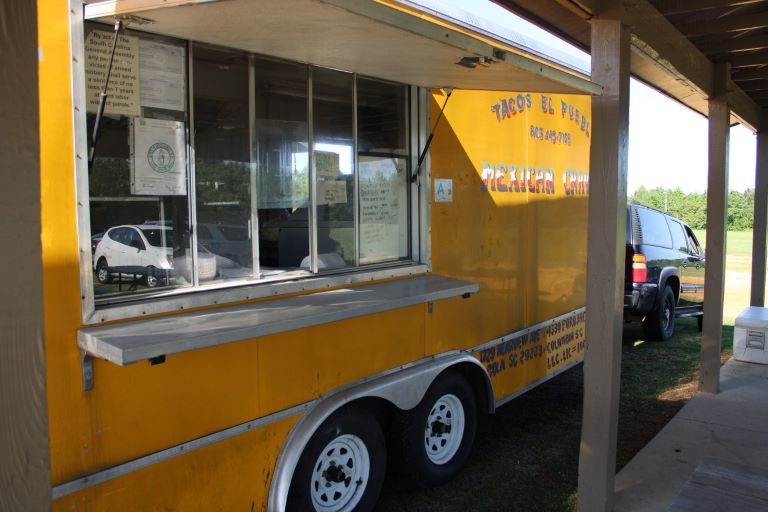
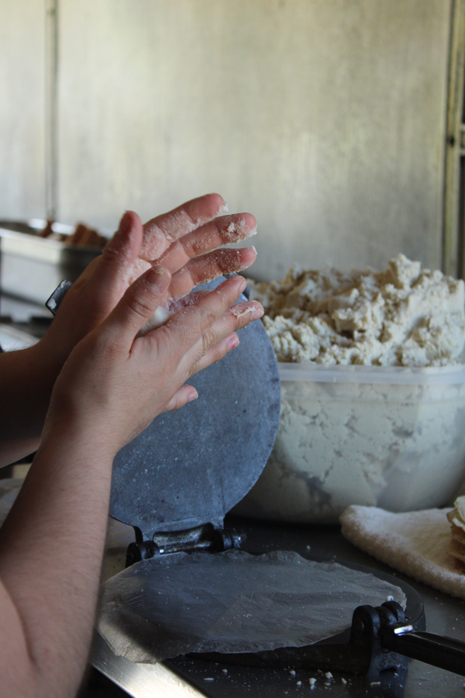
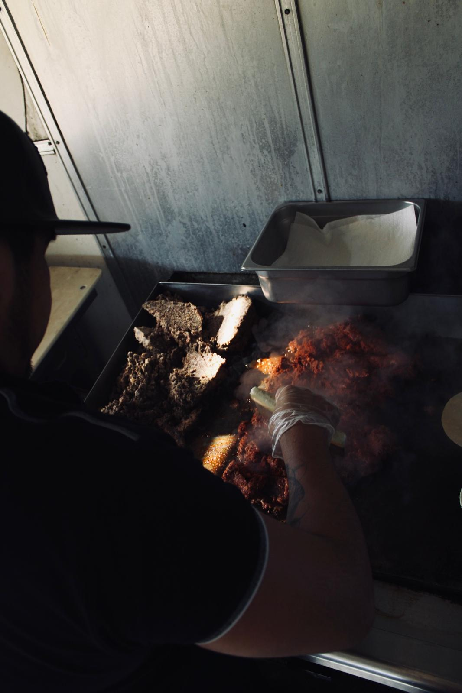

ABOUT US

Since 2014, we have served our customers a delicious variety of handmade Mexican food and drinks inspired by our roots in Puebla, Mexico. Family-owned and operated, we specialize in fresh handmade tortillas and a welcoming atmosphere!
Tacos El Puebla began in our signature yellow food truck, serving Columbia and the surrounding areas for 6 years until we moved our business to a brick-and-mortar building in 2021. Throughout all our years in business, we have always proudly served our customers with a smile.

- Web page design and created by: Daniel Estrada Calderón
- Photos taken by: Daniel Estrada Calderón
- Contact Information: dadacal@hotmail.com